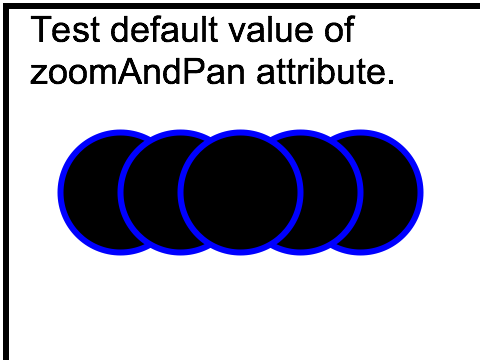

interact-zoom-01-t |
||
| SVG Image | INKSCAPE Image | PNG Image |

|
 | |
|
||||||||||||
Verify correct handling by Dynamic (interactive) viewers for the "zoomAndPan" attribute on the 'svg' element. This is the first of three tests, and tests the default value.
The test consists of a set of black circles with a blue stroke.
After the initial picture is displayed, the user should attempt to use the magnify controls that are required on conforming Dynamic SVG viewers. The correct behaviour is that magnification and panning works correctly, as required by a conformant viewer..
The rendered picture should match the reference image, except for possible variations in the labelling text (per CSS2 rules).